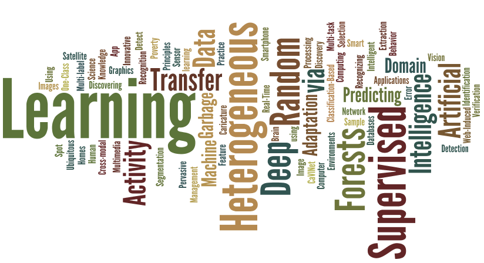

Laboratory of Statistical Artificial Intelligence and Machine Learning
|  | About Us
We work on fundamental artificial intelligence and machine learning problems, in particular generalisability (through transfer learning, meta-learning, zero-shot learning, and few-shot learning), generative models, and explainability. Our research is inspired from applications in computer vision, remote sensing, ubiquitous computing and ICT4D. The image on the left is a word cloud of the publications from the lab (courtesy: wordle) |
Prospective PhD and MS Research Students
The lab is looking for students technically strong in Mathematics and Computer Science interested in the data science, machine learning, deep learning and allied areas. Prospective students must possess excellent programming and communication skills. Please contact if you are one of them. The lab is also interested in industry/health care related problems that can be solved using data science and machine learning techniques. Please reach out if you have an interesting problem.
Summer Internship
Students technically strong in Mathematics and Computer Science with an aptitude for data mining, ubiquitous computing and related fields may apply through the INSA SRF program. The lab will not be taking students outside this program and will not be able to respond to your individual queries.
 Recent News
Recent News
CK is serving as a PC member for AAAI, ICML, ICLR, CVPR, NeurIPS 2023.
Start of a new project on modeling machine calibration supported by Bosch Automotive.
DFAT - project on ResAI for NetZero approved. Congratulations to the team from Swinburne, IPTIF, and IITM
Aroof successfully defended her doctoral dissertation. Congratulations Aroof!
Shared Concept Extractor - SCE accepted to CODS-COMAD 2024. Congratuations Vidhya!
Vidhya successfully defended her doctoral dissertation. Congratulations Vidhya!
CK delivered an invited lecture on Meta-learning at NIT-Suratkal
Vidhya joined Amrita Vishwa Vidhyapeetham Coimbatore as a faculty of artificial intelligence. Congratulations Vidhya!
EWSmethods: an R package to forecast tipping points at the community level using early warning signals, resilience measures, and machine learning models accepted to Ecography
Hrithik Suresh joined LSAIML as a PhD student
CK delivered an invited lecture on Generative models at NIT Trichy
Vasanthan secured best project award for MTech Data Science. Congratulations Vasanthan!
Adaptation: Blessing or Curse for Higher-way Meta-learning - accepted to IEEE Transactions on AI
Understanding calibration of deep neural networks for medical image classification accepted to Computer Methods and Programs in Biomedicine
CK is serving as Associate Editor for Knowledge and Information Systems Journal.
Explainable Image Classification: The Journey so far and the Road Ahead accepted to Artificial Intelligence Special Issue on Interpretable and Explainable AI applications 2023.
CK is serving as a PC member/reviewer for AAAI, ICML, NeurIPS, ICLR, KDD, and CVPR 2022.
Congratulations Aroof for securing PhD internship at Wadhwani Institute of Artificial Intelligence
Algorithmic Recourse based on User's Feature-order Preference, accepted to ACM CODS-COMAD, Young Research Symposium, Congratulations Manan, and our collaborators Shivam and Dr. Jain from IIT Ropar and Srinivas and Dr. Ghalme from IIT Hyderabad
CK delivered a few lectures on machine learning and deep learning at Tipping Points in Complex Systems School, ICTS Bengaluru.
CK received DST-SERB-ITS support to participate in WCCI 2022
Pho(SC)-CTC - A Hybrid Approach Towards Zero-shot Word Image Recognition, accepted to IJDAR. Congratulations Ravi, Bharat, and our collaborator Dr. Chanda
Adversarial Projections to Tackle Support-Query Shits in Few-shot Meta-Learning accepted to ECML-PKDD 2022, Congratulations Aroof and Bharat
Explainable Domain Adaptation, accepted to IJCNN 2022, Congratulations Vidhya
Deciphering Meta-Initialized and Optimized Neural Networks, accepted to the RBCDSAI-FCAI conference on Deployable AI. Congratulations Aroof, Hansin, and Sahil
CK has moved to the Department of Data Science at IIT Palakkad
Site Stats: